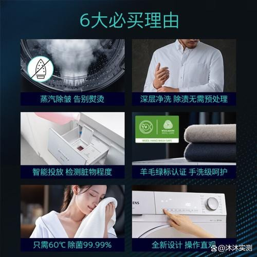

西门子 WG54B2X 洗衣机

西门子中端滚筒洗衣机，约 10kg 大容量搭配 BLDC 变频电机，程序覆盖棉织物、混合、羊毛与快洗，高温除菌与洁筒程序守护健康。德系调校运行稳定安静，是追求品质与耐用性的家庭主力机型。
客观评测
WG54B2X 采用 BLDC 变频电机，约 10kg 洗涤容量与 1400rpm 脱水转速，能效一级。实测对棉麻织物与大件床品的洗净效果良好，衣量感应自动调节水量，漂洗彻底、泡沫残留少。洗涤噪音约 48dB（约），脱水阶段机身稳定性出色。高温除菌洗与洁筒程序对母婴家庭实用，羊毛程序对娇贵面料的机械力控制得当。部分版本支持 Home Connect 远程控制，整体调校成熟可靠。
主观点评
它像一位沉默可靠的德系管家：没什么炫技功能，但每次打开舱门，衣服都是干干净净漂洗到位的，摸起来没有滑腻的泡沫感。脱水时纹丝不动的稳定感让人安心，夜里洗衣也不吵人。价格确实比国产同容量贵，智能功能也要看版本；但洗衣机是打算用十年的家电，把钱花在稳定和耐用上，长期看并不亏。
优点与不足
- 洗净与漂洗表现稳定，厚重衣物也能洗得干净
- 运行安静平稳，脱水震动控制优于同级机型
- 高温除菌与洁筒程序，健康洗护更安心
- 同容量下比国产品牌贵出一截
- 部分智能功能需选配高配版本，基础款不支持
参数规格
| 类型 | 滚筒洗衣机 |
|---|---|
| 洗涤容量 | 约 10 kg |
| 电机 | BLDC 变频电机（iQdrive，约） |
| 转速 | 约 1400 rpm |
| 能效 | 一级能效 |
| 程序 | 棉织物、混合洗、羽绒、羊毛、15 分钟快洗等 |
| 除菌 | 高温除菌洗、洁筒程序 |
| 水位 | 自动感应衣量，调节水量与洗涤时长 |
| 智能 | 部分版本支持 Home Connect 远程控制 |
| 噪音 | 洗涤约 48 dB(A)（约） |
| 内筒 | 不锈钢水韵内筒 |
| 舱门 | 大舱门设计，取放衣物方便 |
| 尺寸 | 约 598 × 590 × 848 mm（约） |
| 重量 | 约 78 kg（约） |